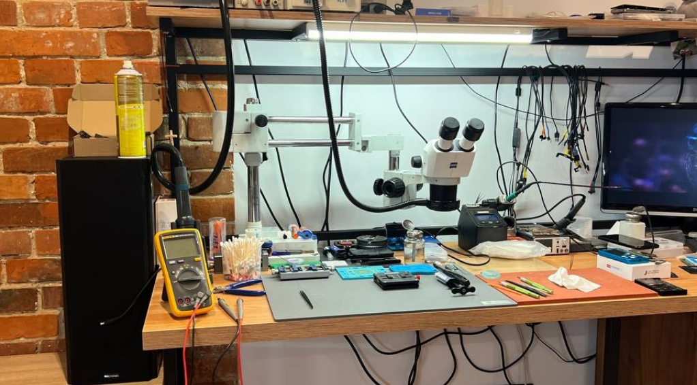
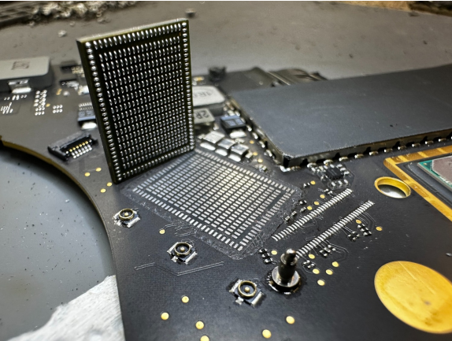
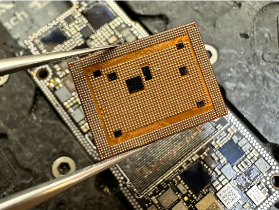
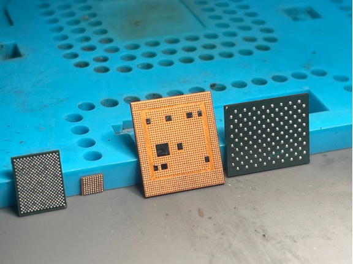

B2B-Reparaturpartner für Handyshops, Werkstätten und Elektronikfachhändler
Ich übernehme Reparaturen, die im normalen Werkstattalltag zu aufwendig, technisch anspruchsvoll oder zeitintensiv sind. Sie behalten Ihren Kunden – ich übernehme die technische Arbeit im Hintergrund.
| Erfahrung | 15 Jahre |
|---|---|
| Garantie auf alle Reparaturarbeiten | 12 Monate |
| Anspruchsvolle Reparaturen selbst durchgeführt | 9/10 |
| Reparaturen am selben Tag erledigt | 9/10 |
Kooperation für Servicebetriebe und Händler
Die Zusammenarbeit ist sowohl per Versand als auch nach persönlicher Vereinbarung möglich.
-
Spezial-Tarife und Express-Service
Flexible B2B-Konditionen: Preise und Abläufe werden abhängig von Art und Volumen der Aufträge individuell vereinbart.
Konditionen anfragen -
Technik im Hintergrund
Sie behalten Ihren Kunden, ich übernehme die technische Arbeit im Hintergrund. Aufgaben, die Ihre Kapazitäten sprengen, geben Sie einfach ab.
-
Versand oder persönliche Übergabe
Senden Sie Geräte per Post oder Kurier (48h-Post-Einsende-Service) oder vereinbaren Sie eine persönliche Übergabe in Linz. Die Versandadresse nenne ich Ihnen auf Anfrage.
B2B-Reparaturleistungen in Linz
Technischer Service für Handyshops, Werkstätten und Händler. Reparatur und Instandsetzung von Smartphones, Tablets und Notebooks.
-
Komplexe Mainboard-Reparatur
Instandsetzung von Hauptplatinen, inklusive Ladebuchsen- und Platinen-Reparatur.
-
BGA-Rework & Reballing
Austausch und Neuaufbau von BGA-Bauteilen mit professioneller Rework-Technik.
-
SMD- / Microsoldering
Präzise Lötarbeiten auf Bauteilebene unter dem Mikroskop.
-
Fehlerdiagnose auf Bauteilebene
Sorgfältige Diagnose, auch für Fehlerbilder, die in Ihrer Werkstatt nicht eingrenzbar sind.
-
Glaswechsel auf Originaldisplays
Display- und Glasaustausch mit Erhalt des Originaldisplays. Das schont das Budget Ihrer Kunden.
-
Datenrettung
Rettung wichtiger Daten von beschädigten Geräten und Hauptplatinen, inklusive Software-Wiederherstellung.
-
IC-Austausch & Chip-Swap
Komplexer Mikrochip-Tausch und Instandsetzung von Apple-Geräten und Spezialhardware.
-
Wasserschaden & Akku-Tausch
Wasserschaden-Behandlung sowie Akku-Tausch mit Akkustatus-Prüfung.
Über mich: Qualität, schnelle Bearbeitung, 15 Jahre Erfahrung
Mein Name ist Yaroslav und ich bin Servicetechniker. Ich bin vor Kurzem nach Linz gezogen und habe bereits mein Gewerbe angemeldet. Seit 15 Jahren repariere ich Apple-Geräte – für mich ist das weit mehr als nur ein Beruf.
Mein Spezialgebiet sind komplexe Motherboard-Reparaturen und Datenrettung, aber auch bei Displayschäden oder beim Akkutausch stehe ich Ihnen gerne zur Seite. Ich verwende ausschließlich Original-Ersatzteile und modernstes Werkzeug. Ihre Zufriedenheit ist mir sehr wichtig!
Dank meines eigenen Ersatzteillagers erledige ich 9/10 aller Reparaturen direkt am selben Tag. Sie können Geräte nach Vereinbarung persönlich übergeben oder bequem per Kurier schicken. Hinterlassen Sie mir auch gerne Ihre Anfragen und Wünsche!
-
Qualität
Saubere, professionelle Ausführung und sorgfältige Diagnose.
-
Schnelle Bearbeitung
Kurze und verlässliche Reparaturzeiten für Ihre Kunden.
-
Erfahrung
15 Jahre tägliche Praxis mit komplexen Fehlerbildern und Mikroelektronik, davon 9 Jahre in der Ukraine und anschließend in Polen.
-
Eigene Ausstattung
Keine Weitergabe an Dritte bei den meisten Arbeiten. Ich erledige alle typische anspruchsvolle Reparaturaufgaben selbst.
-
Garantie
12 Monate Garantie auf alle ausgeführten Reparaturarbeiten.
-
Flexible B2B-Konditionen
Preise und Abläufe werden abhängig von Art und Volumen der Aufträge individuell vereinbart.
Ausrüstung: Reparatur auf Bauteilebene
Eigene Ausrüstung, langjährige Erfahrung und Reparatur auf Bauteilebene. In der eigenen Werkstatt stehen professionelle Mikroskop-, Löt-, Diagnose- und Rework-Systeme für komplexe Reparaturen bereit.




Kontakt für B2B-Anfragen
Sie brauchen einen zuverlässigen Partner für schwierige Reparaturen? Ich freue mich auf eine langfristige B2B-Zusammenarbeit.
- Telefon +43 670 657 7783 Direkt anrufen
- E-Mail komaxaonly@gmail.com Anfrage mit Gerät und Fehlerbild senden
- Telegram +380 66 222 50 56 Nachricht schreiben
Ort: 4020 Linz, Österreich. Die Versandadresse nenne ich Ihnen auf Anfrage. Gewerbeberechtigung: Kommunikationselektronik (Handwerk) gemäß § 94 Z 39 GewO 1994.
Senden Sie Ihre schwierigen Fälle per Post ein oder vereinbaren Sie eine persönliche Übergabe.
Details zum Ablauf des 48h-Post-Einsende-Service erfragen Sie bitte per Telefon, E-Mail oder Telegram.